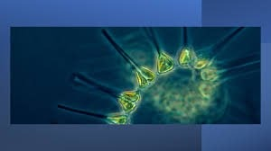
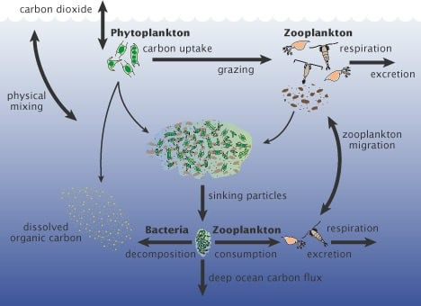

Derived from the Greek words phyto (plant) and plankton (made to wander or drift), phytoplankton are microscopic organisms that live in watery environments, both salty and fresh. Some phytoplankton are bacteria, some are protists, and most are single-celled plants. Among the common kinds are cyanobacteria, silica-encased diatoms, dinoflagellates, green algae, and chalk-coated coccolithophores.
Phytoplankton are extremely diverse, varying from photosynthesizing bacteria (cyanobacteria), to plant-like diatoms, to armor-plated coccolithophores (drawings not to scale). (Collage adapted from drawings and micrographs by Sally Bensusen, NASA EOS Project Science Office.) Like land plants, phytoplankton have chlorophyll to capture sunlight, and they use photosynthesis to turn it into chemical energy. They consume carbon dioxide, and release oxygen. All phytoplankton photosynthesize, but some get additional energy by consuming other organisms. Phytoplankton growth depends on the availability of carbon dioxide, sunlight, and nutrients. Phytoplankton, like land plants, require nutrients such as nitrate, phosphate, silicate, and calcium at various levels depending on the species. Some phytoplankton can fix nitrogen and can grow in areas where nitrate concentrations are low. They also require trace amounts of iron which limits phytoplankton growth in large areas of the ocean because iron concentrations are very low. Other factors influence phytoplankton growth rates, including water temperature and salinity, water depth, wind, and what kinds of predators are grazing on them. When conditions are right, phytoplankton populations can grow explosively, a phenomenon known as a bloom. Blooms in the ocean may cover hundreds of square kilometers and are easily visible in satellite images. A bloom may last several weeks, but the life span of any individual phytoplankton is rarely more than a few days.
Importance of phytoplankton The food web Phytoplankton are the foundation of the aquatic food web, the primary producers, feeding everything from microscopic, animal-like zooplankton to multi-ton whales. Small fish and invertebrates also graze on the plant-like organisms, and then those smaller animals are eaten by bigger ones. Climate and the Carbon Cycle Through photosynthesis, phytoplankton consume carbon dioxide on a scale equivalent to forests and other land plants. Some of this carbon is carried to the deep ocean when phytoplankton die, and some is transferred to different layers of the ocean as phytoplankton are eaten by other creatures, which themselves reproduce, generate waste, and die. Worldwide, this “biological carbon pump” transfers about 10 gigatonnes of carbon from the atmosphere to the deep ocean each year. Even small changes in the growth of phytoplankton may affect atmospheric carbon dioxide concentrations, which would feed back to global surface temperatures.
